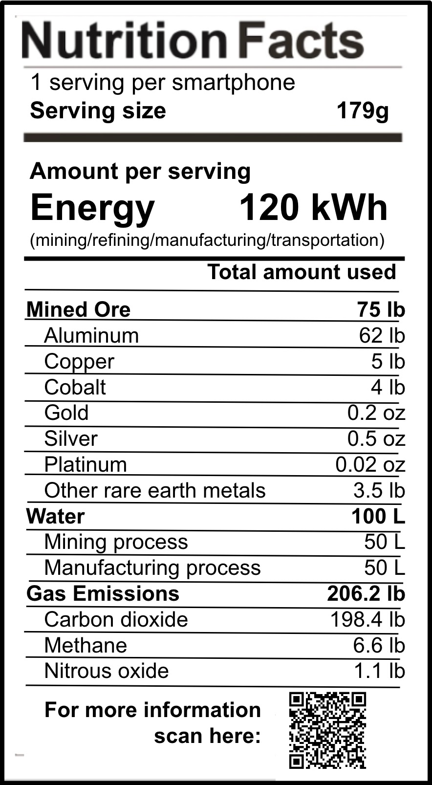

the smartphone sustainability nutrition label
Our smartphones have become an essential part of our daily lives, but the production process behind these devices has a hidden cost. To raise awareness about the environmental, social, and ethical impacts of smartphone production, we've created the Smartphone Sustainability Nutrition Label sticker. This unique sticker can be placed on the back of your phone, visually outlining the resources and methods involved in producing a smartphone and highlighting the need for change.
